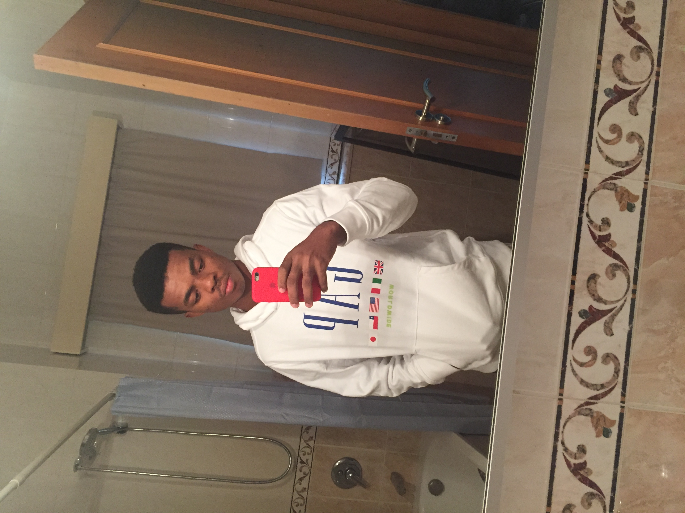

😎
About
When I'm not behind the keyboard puching random keys, I do enjoy hanging out with friends and if I can't go out, I play video games to relax with a competitive mindset.
When I'm behind the keyboard, I listen to music, it helps me concentrate
Music is a very important part of my daily life, I always need music in my ears 😂.
In the mornings, after my 10 minutes meditation, I work out at the gym, I enjoy various physical pursuits and pushing the body to its limit and I realized that sitting down for hours was taking its toll on me and I had to do something about that.
